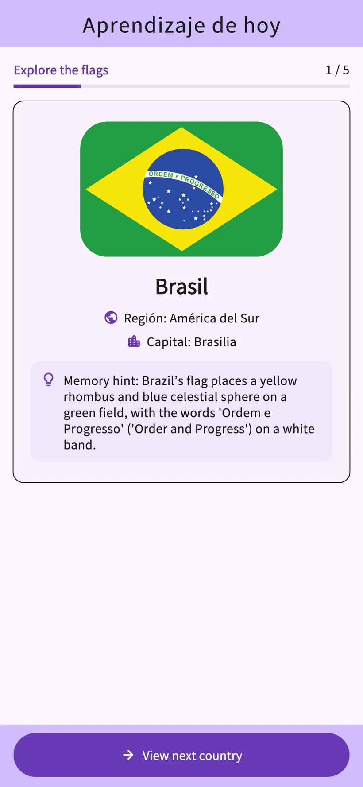
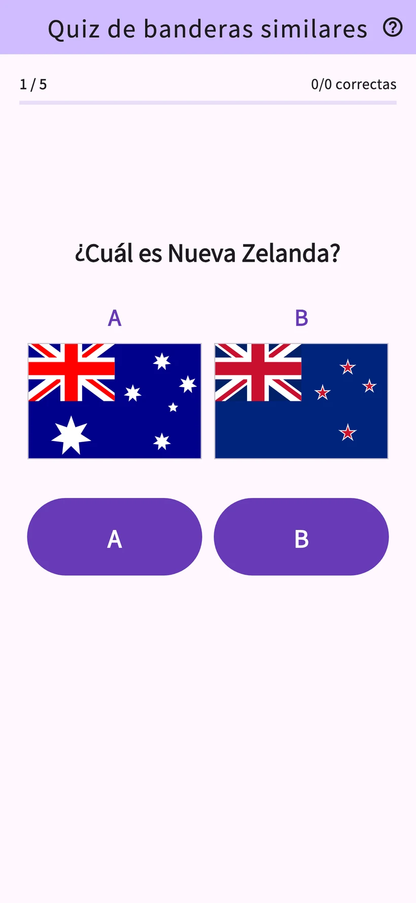
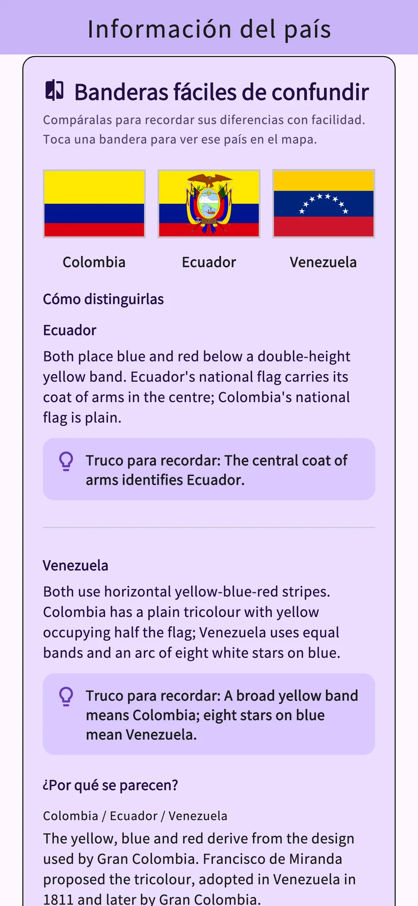
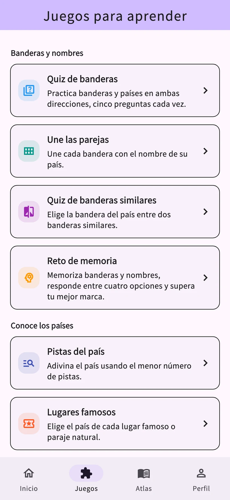

01
Quiz de banderas
Elige el país de una bandera o la bandera de un país.
Banderas: aprende con Awa Pop
Estudia las banderas y capitales de 206 países y territorios.
Comprueba lo que recuerdas con lecciones diarias y ocho juegos.
iPhone y Android · Descarga gratuita con compras en la app


Pantallas reales de la app
Estudia las banderas y los nombres de los países y compruébalos en un quiz. Los repasos se basan en tu historial de aprendizaje.
La pantalla de progreso muestra datos de ejemplo. El análisis detallado está disponible con Study Plus.
Compara colores y diseños para reconocer las diferencias. Prueba con las banderas de Francia e Italia.
Ejemplo interactivo para esta web sobre cómo distinguir banderas. Su presentación es distinta a la de la app.
Practica banderas, nombres de países, lugares y países vecinos. Elige un juego según lo que quieras aprender.
Elige el país de una bandera o la bandera de un país.
Une cada bandera con el nombre de su país.
Elige la bandera correcta entre dos diseños parecidos.
Memoriza banderas y países y responde preguntas de opción múltiple.
Identifica el país a medida que aparecen las pistas.
Identifica países por sus monumentos y patrimonio natural.
Compara la población, superficie y otros datos de dos países.
Elige los países que comparten una frontera terrestre.


Banderas, capitales, mapas, orígenes y cultura de 206 países y territorios. Investiga ese país que te ha llamado la atención en el quiz.
Descubre la cultura y las recomendaciones de los países y territorios de quienes participan. Las publicaciones se traducen y revisan antes de aparecer en los idiomas de la app.
El apodo es opcional. Puedes reportar u ocultar publicaciones. Los vídeos de YouTube se abren fuera de la app.
Aprendizaje diario
Un vídeo con recompensa disponible añade 3 usos a la categoría elegida para ese día. Volver a abrir el mismo país el mismo día no consume otro uso.
Uso ilimitado sin anuncios
Planes mensuales y anuales de renovación automática
El plan mensual ofrece 1 mes de prueba gratuita a quienes cumplan los requisitos. El plan anual no incluye prueba gratuita.
Consulta el precio, los requisitos de la prueba, el importe posterior y el periodo de renovación en la pantalla de compra de la app.
La app está disponible en 10 idiomas: japonés, inglés, español, alemán, coreano, tailandés, indonesio, francés, portugués de Brasil y chino tradicional de Taiwán.
La sesión del día y el repaso habitual son gratuitos. Puedes consultar detalles de 3 países distintos e iniciar hasta 3 partidas en total al día desde la pestaña de juegos. Un vídeo con recompensa disponible añade 3 usos a la categoría elegida ese día.
El plan mensual ofrece 1 mes de prueba gratuita a quienes cumplan los requisitos. El anual no incluye prueba gratuita. Consulta el precio y los requisitos en la pantalla de compra de la app.
No necesitas registrarte ni iniciar sesión. Puedes enviar Historias de países y comentarios desde la app.
Los registros de aprendizaje se guardan en el dispositivo. No hay sincronización automática con otros dispositivos. Restaurar compras y trasladar los registros de aprendizaje son funciones distintas.
Quienes sientan curiosidad por las banderas y la geografía pueden aprender a su ritmo. La app incluye anuncios, compras opcionales, publicaciones y enlaces externos. Si la usa un niño pequeño, conviene que una persona adulta lo acompañe.
Se envían tras aceptar las normas de publicación, la traducción y la difusión. Se publican después de traducirse y revisarse. El apodo es opcional; puedes eliminar tus publicaciones, reportar contenido y ocultar publicaciones.
Prueba las lecciones diarias y los ocho juegos en la app.
iPhone y Android · Descarga gratuita con compras en la app